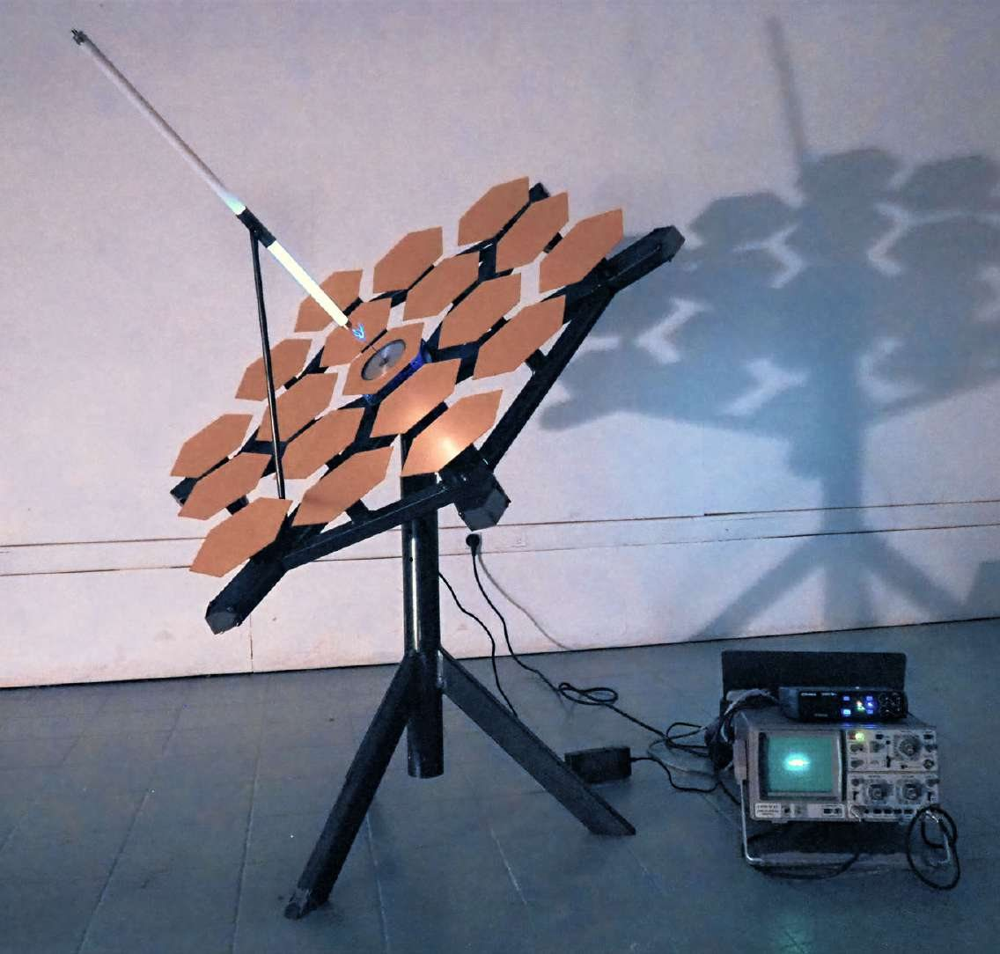

2026 · Projet en cours
Installation sculpturale
Installation sculpturale
Dispositif d'émission et de réception à échelle réduite, inspiré du Square Kilometre Array (SKA). Dans ce projet, je m'intéresse à ce que captent, filtrent ou rendent invisible les dispositifs de communications civils comme militaires.
Par la fabrication d'une antenne parabolique, j'imagine les flux qu'elle met en circulation, jusqu'à envisager l'envoi d'un message personnel vers une altérité extraterrestre, en écho au message d'Arecibo. La parabole devient un point d'ancrage pour interroger des régimes de visibilité et de transmission, révélant les infrastructures discrètes qui organisent notre rapport au monde.